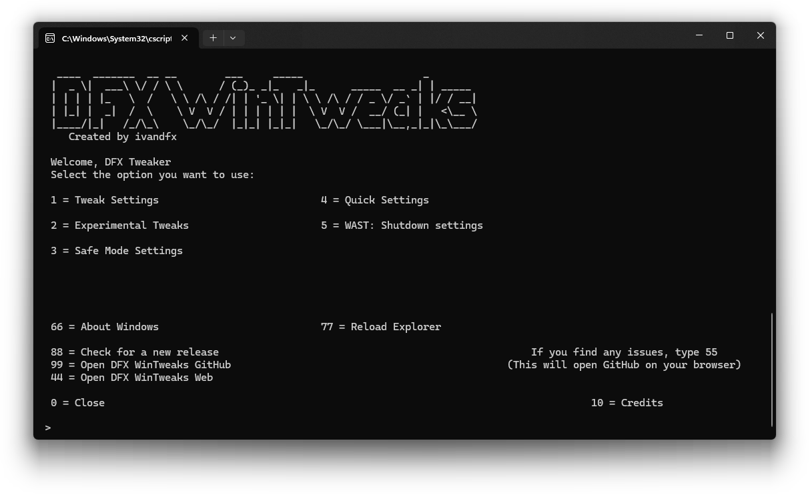

Version 24.7.1 - July 19, 2024
For Windows 11 and 10 (32/64bit)
Website in development, some stuff doesn't work*

Currently, DFX WinTweaks depends on Windows built-in featureset, but development for online features has started.
You can also check older releases of DFX WinTweaks and DFX Tweaker
720p or higher screen is recommended
This site works best with Firefox